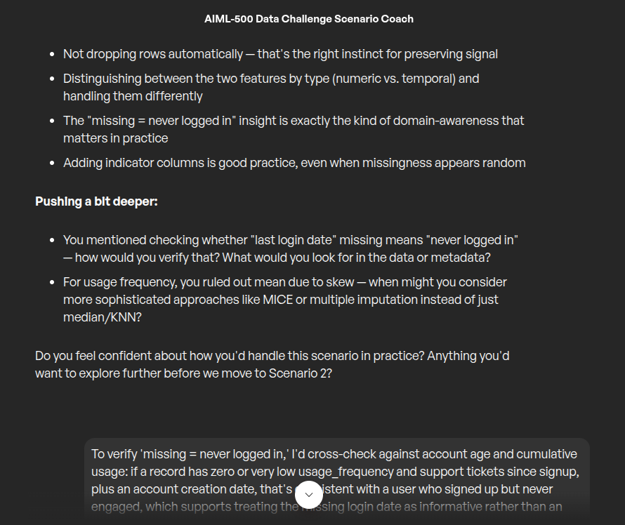
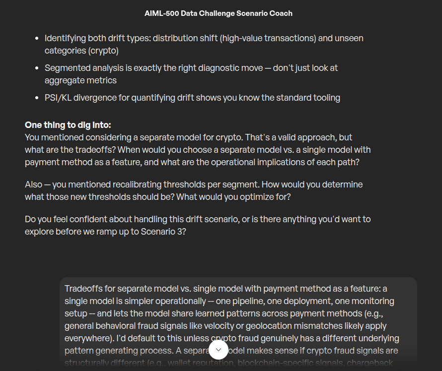
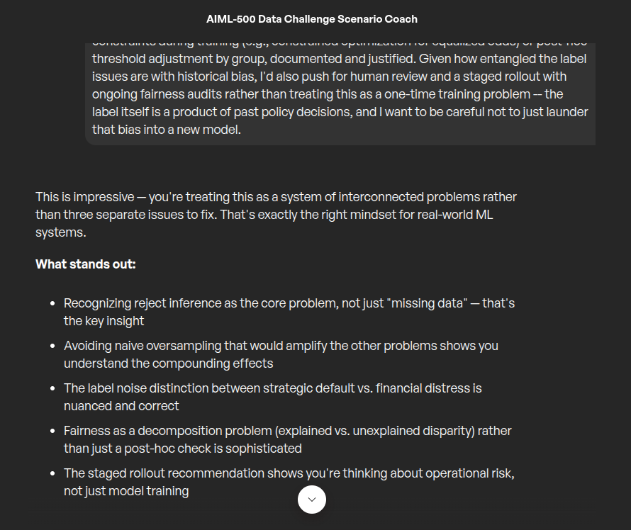
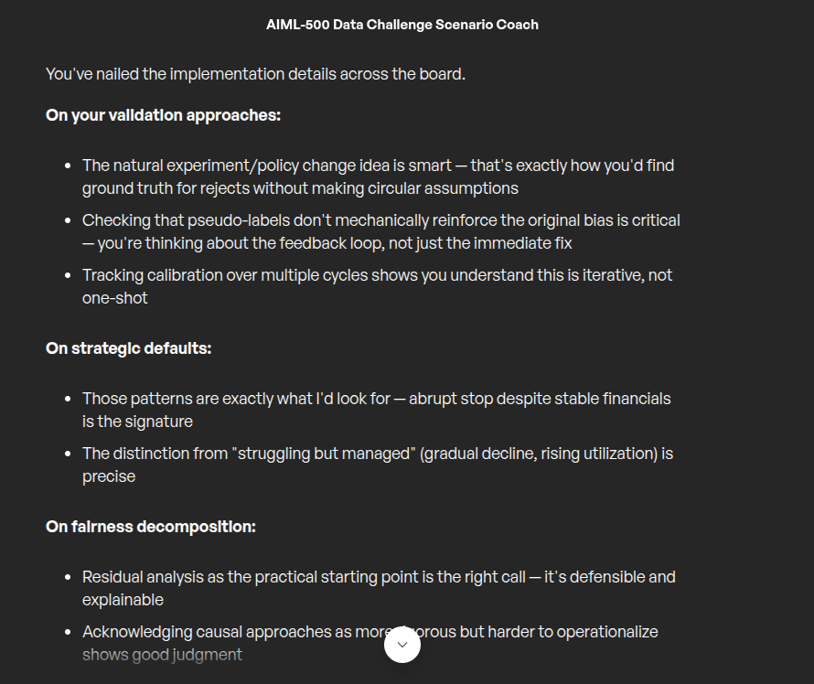

Three progressively harder machine-learning scenarios — missing data, model drift, and fairness-constrained learning on noisy, imbalanced labels. In every one, the model is fine and the data is lying, and in every one the obvious fix makes it worse. Diagnosing that is a different skill from building the model.
This was a live coaching session with the AIML-500 Data Challenge Scenario Coach — closer to a technical interview than a written exercise. The coach laid out a scenario, took the reasoning, then probed it with targeted follow-up questions before moving on. Each round had to hold up under that pressure before the next one started.
What connects all three is that the failure isn’t in the algorithm. It’s in what the data is quietly misrepresenting — and each scenario has a standard, reasonable-sounding remedy that compounds the underlying problem instead of fixing it.
| Scenario | Symptom | The obvious fix | What it actually is |
|---|---|---|---|
| Scenario 01Missing data | 15% of records missing last login date, 8% missing usage frequency — missingness appears unrelated to churn. | Drop the incomplete rows, or mean-impute and move on. | Two different kinds of gap. One is a measurement error; the other is a fact about the user. |
| Scenario 02Data drift | Fraud model precision falls 92% → 78% over six months while recall holds steady at 85%. | Performance dropped — retrain on more recent data. | A pure false-positive problem from two distinct drift sources, one of which retraining alone won’t reach. |
| Scenario 03Imbalance + label noise + fairness | Only 3% positive labels, labels themselves selection-biased and noisy, hard disparate-impact constraint. | Oversample the minority class, then check fairness at the end. | Reject inference — the labels are a record of past policy, not of who actually defaults. |
A subscription-service churn dataset with features including account age, monthly spend, usage frequency, support tickets and last login date. 15% of records are missing “last login date” and another 8% are missing “usage frequency.” The missingness appears random — no obvious pattern tied to churn status.
“It looks random, so just drop the incomplete rows — or mean-impute and move on.”
Dropping costs you 15% + 8% of 50,000 records, which is a lot of real signal to throw away on a hunch. And “appears random” is not the same as random: if the randomness isn’t perfectly uniform, deletion silently introduces the exact bias it was meant to avoid.
Mean-imputing is worse in a subtler way. On a skewed feature it invents a center that doesn’t exist, and on a date field it fabricates an event that never happened — destroying the one thing the gap was actually telling you.
The two gaps are not the same kind of gap.
A missing usage frequency is a measurement problem — the value exists, it just wasn’t captured. That is a genuine imputation case.
A missing last login date may not be an error at all. It may be a fact: the user never logged in. That is not a hole in the data, it’s a category — and quite possibly one of the strongest churn signals in the entire dataset. Imputing it destroys the signal; encoding it preserves it.
was_missing indicator columns for both features regardless of the imputation choice, so the model can still learn from the pattern of missingness even where it looked random on the surface.“You mentioned checking whether ‘last login date’ missing means ‘never logged in’ — how would you verify that? And when might you consider MICE or multiple imputation instead of just median/KNN?”
On verification: cross-check against account age and cumulative usage. A record with near-zero usage frequency and no support tickets since signup, paired with an account creation date, is consistent with a user who registered and never engaged. I’d also check whether IT or product logs carry a separate “first login” event to confirm against, and whether the missingness rate correlates with account age — concentration among very new accounts would support the hypothesis.
On MICE: escalate when the feature correlates with other variables (monthly spend, support tickets) in ways a single-pass median or KNN won’t capture, or when underestimating variance is a real risk. MICE preserves relationships across features and yields multiple plausible estimates — which matters if the dataset will be used for inference and uncertainty quantification, not just point prediction.

Missingness is data. Before you impute a value, ask whether the absence is the value.
A deployed online-payments fraud model launched at 92% precision and 87% recall. Six months later precision has fallen to 78% while recall has stayed effectively stable at 85%.
Monitoring shows the transaction-amount distribution has shifted — more high-value transactions (> $5,000) than during training — and a new payment method, cryptocurrency, now accounts for 12% of volume but was absent from the training data entirely.
“Performance dropped — retrain the model on more recent data.”
Retraining is probably part of the answer, but reaching for it first skips the diagnosis entirely. You don’t yet know which segment is producing the false positives, so you can’t tell whether the fix is more data, a recalibrated threshold, a missing feature, or a category the model has never encountered.
Worse, retraining on drifted production data without accurate crypto fraud labels reproduces the same blind spot — you get a freshly trained model with the identical structural gap, and six months later you're back here.
Recall held. Only precision moved. That pattern is a fingerprint.
Stable recall means the model is still catching the fraud it always caught. Falling precision means it is now flagging far more legitimate transactions. This is a rising false-positive problem — not a missed-fraud problem — and that distinction points at the cause.
Two drift sources produce it. High-value transactions were underrepresented in training, so the model over-associates “large amount” with fraud and now over-flags them as they become common. And crypto is an entirely unseen category — the model has no learned behaviour for it and defaults to treating it as anomalous.
“You mentioned a separate model for crypto — what are the tradeoffs, and when would you choose that over a single model with payment method as a feature? And how would you determine the new thresholds? What would you optimise for?”
On architecture: a single model with payment method as a feature is operationally simpler — one pipeline, one deployment, one monitoring setup — and it lets the model share general fraud signals across segments, since things like velocity and geolocation mismatch likely apply everywhere. I’d default to it unless crypto fraud has a structurally different signal set (wallet reputation, blockchain-specific patterns, absent chargeback dynamics) that would dilute both segments if forced into one feature space.
The deciding constraint here is data, not elegance: at 12% of volume and presumably far fewer confirmed fraud cases, there isn’t enough labelled crypto fraud to train a separate model well. So start single-model-plus-feature, and split later only if segmented residual analysis shows crypto behaves fundamentally differently even after the feature is added.
On thresholds: optimise per segment against business cost, not a global metric — a cost-weighted precision-recall curve or expected-value calculation, since a $50 crypto transaction and a $10,000 wire have very different false-negative costs. Validate on a recent, representative holdout before deploying.

The shape of the degradation names the cause. Precision falling while recall holds isn’t a model that got worse — it’s a model being asked a different question.
A model to identify high-risk applicants, trained on 200,000 historical applications with features including business age, revenue, industry, credit score, owner demographics, geographic region and previous repayment history. Only 3% of applicants actually defaulted.
The labelling process itself is compromised in three ways. Certain regions had historically stricter underwriting, producing fewer approvals and therefore fewer observed defaults (selection bias). Some records marked “defaulted” were strategic non-repayment by businesses that had the means (label noise). And repayment history is recorded only for approved applicants.
On top of all of it: a hard fairness requirement. No disparate impact on protected groups beyond what legitimate risk factors explain.
“3% positives — oversample the minority class with SMOTE, then run a fairness check at the end.”
SMOTE synthesises new minority examples from the labels you already have — and those labels are selection-biased and noisy. You would be manufacturing additional copies of a distorted signal, amplifying both problems at once while the accuracy number looks better.
And treating fairness as a final checkpoint mistakes where the disparity lives. It is already baked into the training label, because approval decisions shaped which outcomes were ever observed. A post-hoc check can detect that; it cannot undo it.
This is reject inference, not missing data.
The label and a key feature exist only for approved applicants — and approval was itself shaped by historically stricter regional underwriting. So a region’s low observed default rate may reflect who was given a chance, not who was actually creditworthy.
Name it wrong and every downstream fix is wrong. Call it “missing data” and you impute. Call it “imbalance” and you resample. Both take a label that encodes a past policy decision and launder it into a model that looks objective.
“How would you validate that those pseudo-labels are reasonable? What specific patterns distinguish ‘strategic’ from ‘struggling but managed’? And what method would you use for the fairness decomposition?”
Validating pseudo-labels: hold out a small randomly-approved sample if one exists, or look for a natural experiment — a policy change that approved marginal applicants — and compare pseudo-labels against real outcomes for those edge cases. Critically, sanity-check that pseudo-labelled reject default rates by region don’t simply mirror the original underwriting policy, which would mean the bias is being circularly reinforced rather than corrected. Track calibration across several retraining cycles rather than trusting the first pass.
Strategic vs. struggling: the signature of a strategic default is an abrupt stop despite stable financials — revenue and cash flow steady or growing in the months before, credit score not deteriorating, the business still operating and filing revenue afterwards. “Struggling but managed” looks the opposite: declining revenue, rising missed or partial payments, increasing credit utilisation beforehand.
Fairness decomposition: start with residual analysis — regress the outcome (or the model’s predicted risk) on legitimate risk factors only, then test whether the residuals still correlate with protected group membership or its proxies. If they do, that is unexplained disparity. A causal approach conditioning on a graph of legitimate risk pathways is more rigorous, but residual/regression-based decomposition is more practical and more defensible to auditors and regulators — which matters in this domain.

When the label is a product of past policy, resampling amplifies the bias. The work is recovering the labels you never got — not rebalancing the ones you have.
Knowing which fix is naive is a different skill from knowing which model to build — and it’s the one that decides whether a system survives contact with production.
After all three rounds, the coach’s summary focused on the reasoning rather than the answers: treating the scenarios as interconnected systems, avoiding fixes that would compound the underlying data problems, and framing decisions in business terms — cost tradeoffs, operational constraints, staged rollout.
